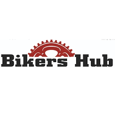

Welocome to bikers hub
Hello my name is Ajay Reddy And iam a student devloper.
THIS website is newly lanched for bikers they are community bound by passion,
freedom,and the open road. Wheather cruising through scenic landscapes,
embraking on long distance advantures, or buliding
coustm bikes in the garage, bikers embrace a life
style the celebrates self-expression,adernaline and camaraderie.
Quick links:
- do you want any coustmize bikes visit this page coustmize.in
- any specified information ? contact us contact page

NEWLY OPEND BIKERS HUB
please visit the store
A new opened national bikers'hub A new DriveX bikers hub has opened in
locations like Tumkur and Varthur, Bengaluru, providing a comprehensive,
one-stop shop for two-wheeler enthusiasts, including used bike sales and maintenance support.
These hubs serve as a central location for riders to buy, upgrade,
or service their motorcycles, acting as a connecting point for the biking community.
KEY OFFERINGS: The new hubs feature a wide range of multi-brand,
pre-owned two-wheelers, making them ideal for upgrading or finding new, certified rides.
Support Services: Expert technicians are available on-site to provide maintenance and service,
ensuring a safe and reliable riding experience.
Purpose: These hubs are designed to act as a central point for information,
connecting riders across the region with quality bikes and services.
This initiative bridges the gap between used vehicle buyers and quality, inspected motorcycles, enhancing the overall, safer, and more informed riding culture in India.